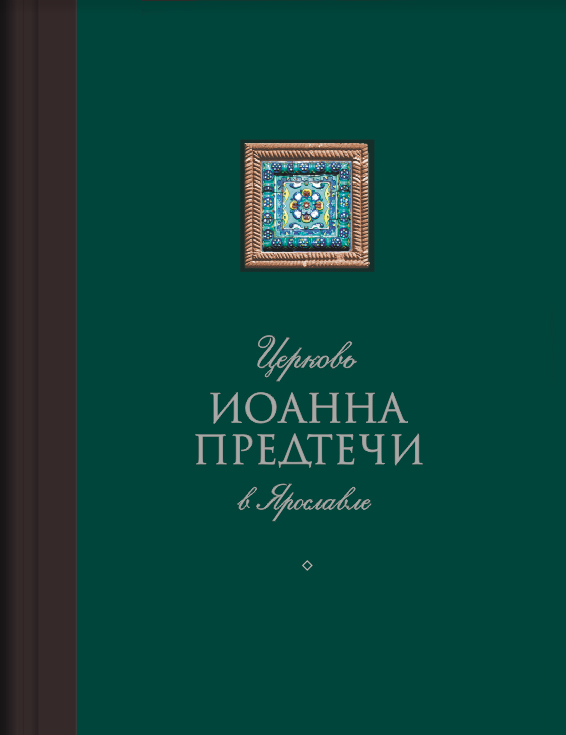
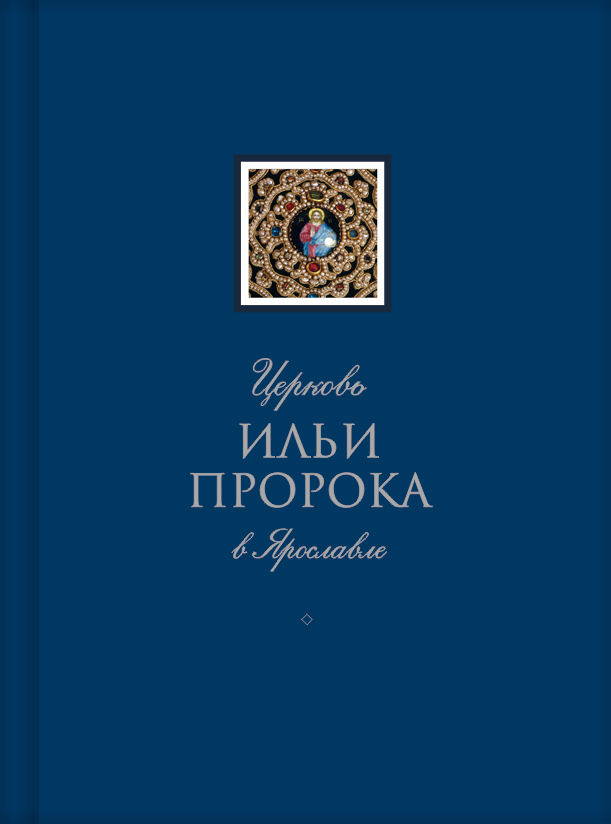
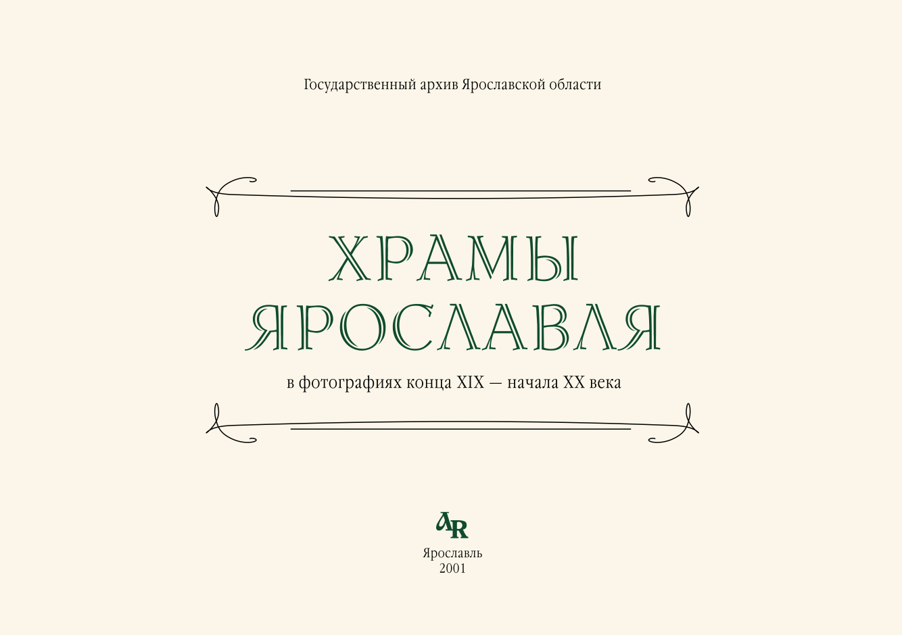
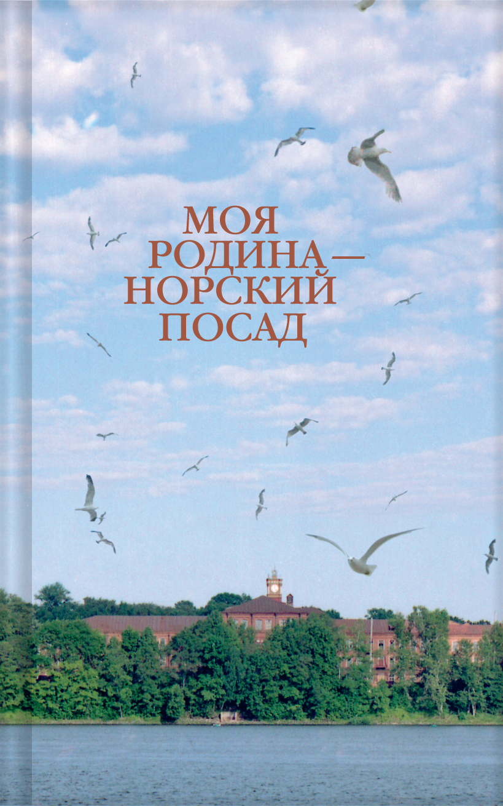
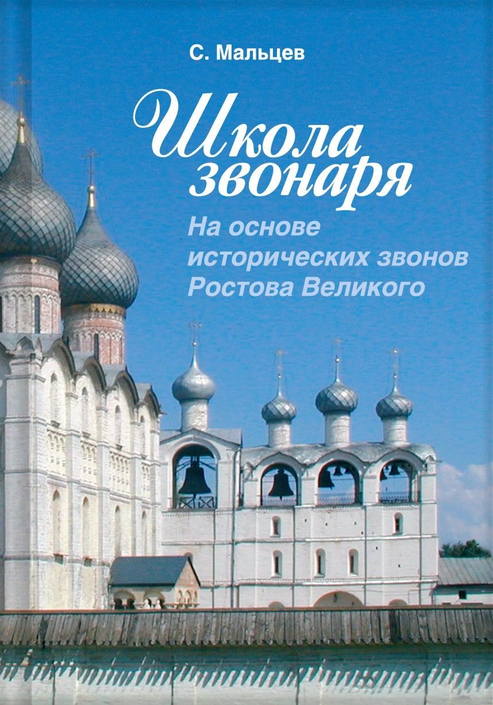
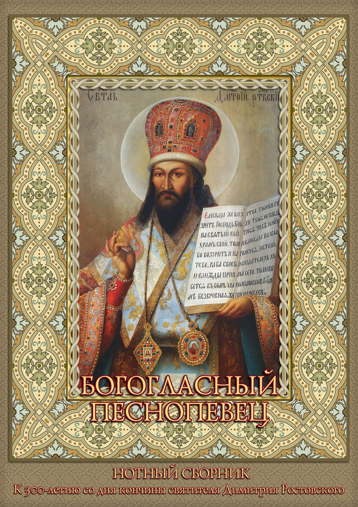

Церковь Иоанна Предтеча в Ярославле
Храмы и святыни Ярославля. История и современность. 2-е издание
Церковь Ильи Пророка в Ярославле. Книга 1

Церковь Ильи Пророка в Ярославле. Книга 2
100 деталей Ярославля

Храмы Ярославля в фотографиях конца XIX – начала XX века
За окнами дома Иванова. Страницы Ярославской истории
Мышкин – город классической провинции

Моя родина – Норский посад
Г. А. Дарьин. Живопись
Прости, я не вернулся. Книга памяти ярославцев, погибших и пропавших без вести при исполнении служебных обязанностей на Северном Кавказе с 12.1994 по 12.2004 гг

Школа звонаря. На основе исторических звонов Ростова Великого

Богогласный песнопевец. Нотный сборник. К 300-летию со дня кончины Святителя Дмитрия Ростовского